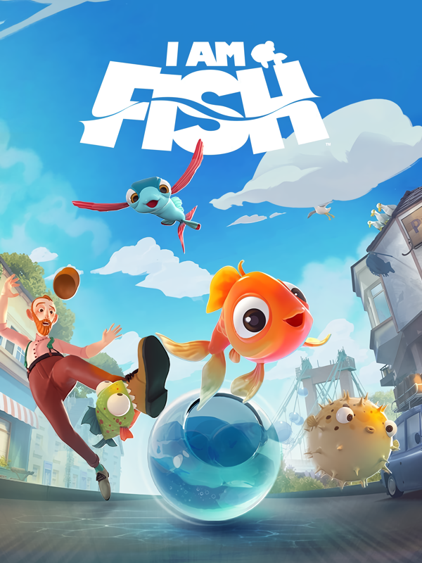

I Am Fish
I Am Fish
Detalhes
|  | |
| Tempo de jogo | 4h 36m 0s |
| Última Atividade | 15/11/2024 12:04:41 |
| Adicionado | 11/02/2025 12:35:29 |
| Modificado | 11/02/2025 12:38:27 |
| Status de Conclusão | Jogado |
| Biblioteca | Steam |
| Fonte | Steam |
| Plataforma | PC (Windows) |
| Data de Lançamento | 16/09/2021 |
| Pontuação da Comunidade | 68 |
| Avaliação da crítica | |
| Pontuação do Usuário | |
| Gênero | Adventure Platform Puzzle Simulator |
| Desenvolvedor | Bossa Studios |
| Editor | Curve Digital |
| Funções | Single Player |
| Links | Steam Official Discord Twitch |
| Tag | |
Descrição

I Am Fish é uma aventura baseada em física e estrelada por quatro peixes intrépidos, separados à força de seu lar em um aquário de pet shop. Ao longo do jogo, sua missão é ajudar os peixinhos a nadar, voar e rolar pelas ruas longínquas de Barnardshire (o menor condado da Inglaterra) até o oceano, em busca da liberdade e do reencontro entre amigos.

AMIGOS APEIXONANTES
Conheça os nossos heróis! Peixe-dourado - alegre, corajoso e aventureiro; um nadador nato! Baiacu - um peixe lentinho, mas de bom coração, que pode se transformar em uma bola e rolar pela terra. Piranha - selvagem, caótica, barulhenta, imprevisível; e não dispensa uma bela mordida, é claro. Peixe-voador - uma criaturinha reservada, mas de coração mole e capaz de planar! Esses heróis corajosos não medirão esforços para superar os obstáculos e se reencontrar!

JOGUE DE BOA NA LAGOA
Nade, role, voe, mastigue, balance, infle e abra caminho entre os mais empolgantes desafios. Os controles simples e intuitivos diminuem suas chances de acabar com a vida dos peixinhos, deixando em você aquele terrível sentimento de culpa.

PENSE FORA DO AQUÁRIO
Com sua costa idílica e vilas pitorescas, Barnardshire pode parecer um recanto pra lá de tranquilo, mas para os nossos aventureiros aquáticos, é um lugar repleto de ameaças reais. Aqui, é preciso cruzar estradas, atravessar telhados, desviar de frigideiras e evitar os animais, o que inclui os habitantes rabugentos da região. Além disso, você ainda deve lidar com aquários frágeis e aquela verdade inevitável: peixes não respiram fora d’água.

O MUNDO NÃO ESTÁ PARA PEIXE
Não adianta chorar pelo peixe derramado; se o seu pequenino cair muito longe de algum aquário improvisado, ficar sem ar ou coisa do tipo, você será levado de volta ao ponto de verificação mais recente para repensar sua estratégia.

CONTINUE A NADAR... PELA LIBERDADE
Nossos amiguinhos de barbatanas pegam carona nos mais diferentes objetos que comportam água, desde jarras e baldes até canecas de cerveja. Saúde! Cada um desses “transportes” traz seus próprios desafios, mas não se preocupe; as “águas abertas” também estão por aí, nas fontes, nas piscinas e... hã... nos esgotos cheios de substâncias perigosas, ajudando você a atingir seu objetivo final: o oceano cristalino.

Whale and Dolphin Conservation
A organização WDC é a principal instituição de caridade global dedicada à proteção de baleias e golfinhos. Com a visão de um mundo em que todas as baleias e golfinhos se vejam seguros e livres, a WDC luta pela sobrevivência dessas belas criaturas ao combater os cativeiros, impedir a caça às baleias, evitar as mortes nas redes e criar mares saudáveis. Uma parte do valor de cada cópia de I am Fish vendida no Steam será doada diretamente para a WDC. WDC, Whale and Dolphin Conservation is a UK registered charity (no. 1014705)